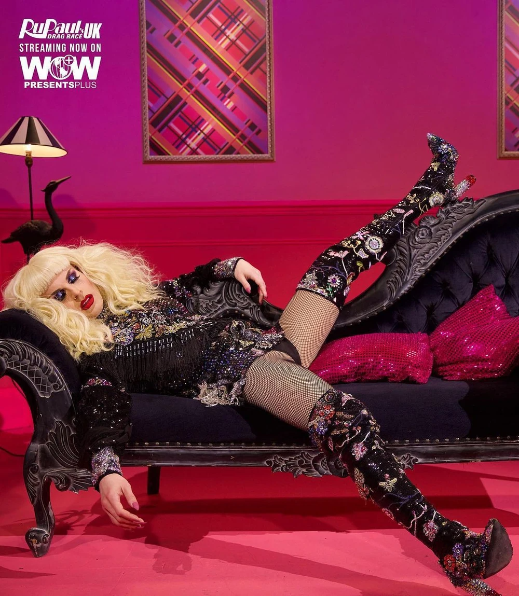

De lesbische yearning fase - oktober 2024
Gay Panic!!!!!
De avond dat wij RuPaul's Drag Race gingen kijken
En dat ik (zonder dat jij dat toen wist) de moed aan het opbouwen was, om jou te vragen om te daten
6 episodes aan drag race, en heel veel shotjes salmari van het drankspel.

En om 2 uur s'nachts, toen jij al had aangegeven dat ik mocht blijven slapen, had ik eindelijk de moed om het te vragen.
De volgende dag plots gelijk je familie ontmoet, terwijl ik nog niet eens wist of je verder wilde met mij.
En ik kan mij de terugweg nog zo goed herinneren, half brak op de fiets, met aan de ene kant een lach op mijn gezicht
Maar ook onzekerheid over of het hier misschien zou stoppen...